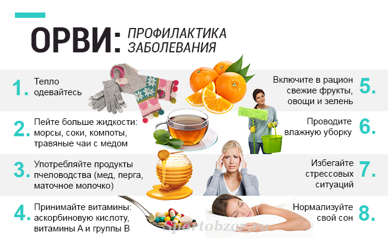

КАК не заболеть гриппом
Что такое грипп?
Грипп (от фр. grippe) – острое инфекционное заболевание верхних дыхательных путей, легко и быстро передаётся от больного человека к здоровому. В настоящее время выявлено более 2000 вариантов вируса гриппа. Источником инфекции чаще всего является больной человек. Возбудители гриппа – вирусы, мельчайшие микроорганизмы, при кашле, чихании, разговоре с мельчайшими капельками слизи попадают в воздух, оседают на пол, стены, окружающие предметы, поэтому грипп относится к воздушно-капельным инфекциям.
Как распознать грипп?
Грипп начинается внезапным общим недомоганием, головной болью, ломотой во всём теле, ознобом, повышением температуры до 39-40 градусов, потливостью, возможны головокружение, носовые кровотечения. При гриппе также характерно: боль в горле, кашель, слезотечение. При благоприятном (без осложнений) течение болезни симптомы длятся в течение 5 дней.
Чем опасен грипп?
Грипп крайне опасен своими осложнениями со стороны дыхательной системы (синусит, бронхит, пневмония), сердечно - сосудистой системы (миокардит), нервной системы (менингит) и т.д.
Не занимайтесь самолечением. Без назначения врача – не принимайте антибиотики, они не защищают от гриппа и не излечивают его.
Принимайте лекарственные средства только по назначению медицинских работников и выполняйте их рекомендации.

Как защитить себя от гриппа?
- Чтобы не заболеть гриппом или переболеть гриппом, но в легкой форме, и избежать осложнений, рекомендуется своевременно делать прививку от гриппа (не позднее 3-4 недель до начала эпидемии). Для этого обратитесь к участковому врачу по месту жительства.
- Избегайте близкого контакта с людьми с симптомами гриппа.
- Тщательно и часто мойте руки с мылом, не забывайте про гигиену носовых ходов, на слизистой которых оседает большое количество пыли и вирусов.
- Придерживайтесь здорового образа жизни (полноценный сон, употребление «здоровой» пищи, физическая активность).
- Ограничьте посещения общественных мест с большим скоплением людей.
- Принимайте витаминно-минеральный комплекс, лук, чеснок.
- Проветривайте помещение и делайте влажную уборку как можно чаще.
- Используйте одноразовые маски.
Что делать если Вы заболели гриппом?
- Оставайтесь дома, не ходите на работу и не посещайте места массовых скоплений людей, не ведите детей в детский сад и школу.
- Вызовите участкового врача.
- До прихода врача рекомендуется обильное питьё, богатое витамином С, в виде морсов, натуральных соков, травяных чаёв с лимоном и мёдом.
- Чтобы не заразить окружающих, используйте при чихании и кашле одноразовые бумажные салфетки с последующей их утилизацией.
ПОМНИТЕ, ЛУЧШАЯ ТАКТИКА – ЭТО ПРОФИЛАКТИКА!
ЗДОРОВЬЯ ВАМ И ВАШИМ БЛИЗКИМ!